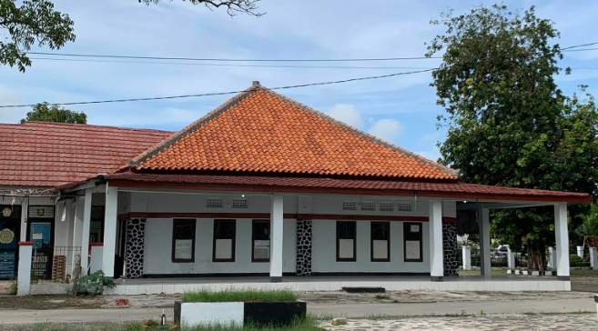
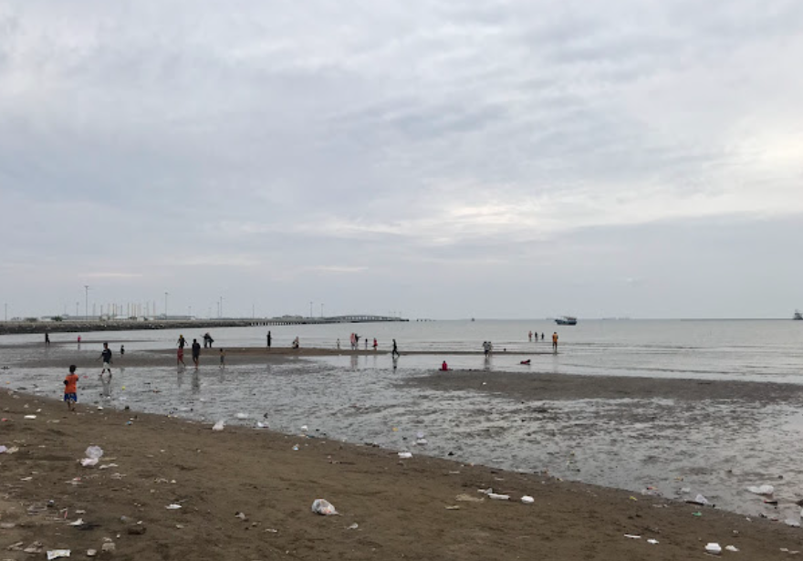

KECAMATAN PUSAKANAGARA
Kabupaten Subang - Jawa Barat
Kabupaten Subang - Jawa Barat
Informasi singkat tentang Kecamatan Pusakanagara

Kecamatan Pusakanagara merupakan salah satu kecamatan di Kabupaten Subang bagian utara yang memiliki potensi pertanian, perdagangan, dan wisata.
Wilayah ini terus berkembang dalam pelayanan masyarakat serta pembangunan infrastruktur daerah.
Pelayanan publik Kecamatan Pusakanagara
Pelayanan administrasi pembuatan dan perpanjangan KTP.
Pengurusan surat domisili dan administrasi masyarakat.
Pelayanan masyarakat dan informasi publik Kecamatan.
Wilayah Desa Kecamatan Pusakanagara
| No | Nama Desa |
|---|---|
| 1 | Pusakaratu |
| 2 | Patimban |
| 3 | Rancadaka |
| 4 | Kalentambo |
| 5 | Gempol |
Wisata dan budaya Kecamatan Pusakanagara

Wilayah utara Subang memiliki potensi wisata pantai yang menarik dikunjungi.

Arak-arakan di Pusakanagara, Subang, adalah tradisi budaya masyarakat setempat yang biasanya diadakan untuk memeriahkan acara hajatan warga, seperti khitanan atau pernikahan. Acara ini identik dengan pawai arak-iringan meriah yang menampilkan berbagai kesenian khas Subang.
Silakan isi data berikut